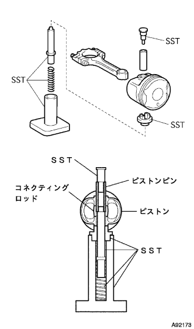

シリンダブロツクASSY オーバーホール（脱着·分解） |
| 1. コネクテイングロツドスラストクリアランス点検 |
 |
ダイヤルゲージを使用して、スラストクリアランスを測定する。
| 2. コネクテイングロツドオイルクリアランス点検 |
ペイントを使用して、コネクティングロッドとキャップに、それぞれのシリンダＮｏ．をマーキングする。
 |
ＳＳＴを使用して、ベアリングキャップを取りはずす。
ベアリング内外面、コネクティングロッドエンドおよびクランクピンを清掃する。
著しい摩耗および傷つきのないことを確認する。
 |
プレスゲージをクランクピンの軸方向にセットする。
コネクティングロッドとキャップの組み合せおよびキャップのフロントマークを確認して、コネクティングロッドにキャップを組み付ける。
ボルトのねじ部および座面に少量のエンジンオイルを塗布する。
ＳＳＴを使用して、ボルトを２－３回に分けて仮締めした後、規定トルクで締め付ける。
ボルト頭部のフロント側にペイントマークを付ける。
ペイントマークを目安に各ボルトを９０°増し締めする。
ベアリングキャップをはずし、プレスゲージの最も幅の広い部分を測定する。
限度以上の場合はベアリングを選択、交換またはクランクピン径を考慮して、Ｕ／Ｓベアリングを使用する。
| 選択符号 | コネクティングロッド大端穴径［ｍｍ］ | ベアリング中央肉厚［ｍｍ］ | オイルクリアランス［ｍｍ］ |
|---|---|---|---|
| １ | ４３．０００－４３．００８ | １．４８８－１．４９２ | ０．０１６－０．０４０ |
| ２ | ４３．００８－４３．０１６ | １．４９２－１．４９６ | ↑ |
| ３ | ４３．０１６－４３．０２４ | １．４９６－１．５００ | ↑ |
| Ｕ／Ｓ０．２５ | ４３．０００－４３．０２４ | １．６０８－１．６１４ | ↑ |
| 3. ピストン ウイズ コネクテイングロツド取りはずし |
| 4. コネクティングロッド ベアリング取りはずし |
| 5. クランクシャフトスラストクリアランス点検 |
 |
ダイヤルゲージを使用して、スラストクリアランスを測定する。
| 6. クランクシャフト取りはずし |
ソケットレンチ（１２ｍｍ）を使用して、図の順序で２－３回に分けて均等にゆるめ、ベアリングキャップを取りはずす。
ベアリングキャップをはずし、クランクシャフトを取りはずす。
| 7. クランクシャフト ベアリング取りはずし |
| 8. ピストン リングセット取りはずし |
 |
ピストンリングツールを使用して、コンプレッションリングＮｏ．１およびコンプレッションリングＮｏ．２を取りはずす。
オイルリングセットを手で取りはずす。
| 9. ピストンSUB-ASSY(ピン ツキ)取りはずし |
ＳＳＴおよびプレスを使用して、ピストンピンを取りはずす。
| 10. シリンダブロック ウォータドレン コックSUB-ASSY取りはずし |
| 11. スタッドボルト取りはずし |
| 12. ストレートピン取りはずし |
| 13. シリンダヘッドセット ストレイト ピン取りはずし |
| 14. タイトプラグ取りはずし |
| 15. オイルジェット取りはずし |
| 16. シリンダブロツクひずみ点検 |
 |
直定規およびシックネスゲージを使用して、シリンダブロック上面のひずみを測定する。
| 17. シリンダボア点検 |
 |
シリンダーゲージを使用して、図の６箇所の内径を測定し、最大値と最小値の差を求める。
| 18. ピストンSUB-ASSY(ピン ツキ)点検 |
マイクロメーターを使用して、ピストン上端から２７ｍｍの位置でピン穴と直角方向の直径を測定する。
 |
キャリパーゲージを使用して、ピストンのピン穴の内径を測定する。
マイクロメーターを使用して、ピストンピンの外径を測定する。
ピストンのピン穴の内径とピストンピンの外径からオイルクリアランスを算出する。
| 19. ピストンクリアランス点検 |
シリンダ最小内径およびピストンの外径より、ピストンクリアランスを算出する。
| 20. ピストンリングとリング溝すき間点検 |
 |
シックネスゲージを使用して、ピストンリングとリング溝のすき間を全周にわたって測定する。
| リング | 基準値［mm］ |
|---|---|
| No.１ | 0.03－0.07 |
| No.２ | 0.02－0.06 |
| 21. ピストンリング合い口すき間点検 |
 |
ピストンを使用して、ピストンリングをシリンダブロック上面から約１１０ｍｍまで押し込み、合い口すきまを測定する。
シックネスゲージを使用して、合い口すき間を測定する。
| リング | 基準値［mm］ | 限度［mm］ |
|---|---|---|
| No.1 | 0.25－0.35 | 0.91 |
| No.2 | 0.35－0.50 | 1.06 |
| No.３（サイドレール） | 0.10－0.35 | 0.82 |
| リング | 基準値［mm］ | 限度［mm］ |
|---|---|---|
| No.1 | 0.22－0.32 | 0.88 |
| No.2 | 0.32－0.47 | 1.03 |
| No.3（サイドレール） | 0.10－0.35 | 0.82 |
| 22. コネクティングロッド ボルト点検 |
ノギスを使用して図の位置で外径を判断する。
| 23. クランクシャフト点検 |
Ｖブロックおよびダイヤルゲージを使用して、クランクシャフトの振れを測定する。
マイクロメーターを使用して、クランクシャフトジャーナル部の図の箇所を測定する
ジャーナル部のだ円度およびテーパー度を算出する。
 |
マイクロメーターを使用して、クランクピンの図の箇所を測定する。
クランクピンのだ円度およびテーパー度を算出する。
チェーンをスプロケットに取り付け、スプロケット（チェーンローラー）の外径を測定する。
| 24. クランクシャフトベアリングキャップセット ボルト点検 |
ノギスを使用して図の位置で外径を測定する。
| 25. クランクシャフトオイルクリアランス点検 |
メインジャーナルおよびベアリングを清掃する。
油溝のあるアッパーベアリングをシリンダブロックに取り付け、ロワーベアリングをベアリングキャップに取り付ける。
クランクシャフトをシリンダブロックに取り付ける。
 |
プレスゲージをクランクシャフトジャーナルの軸方向にセットする。
ベアリングキャップのフロントマークおよび打刻番号を確認してブロックに取り付ける。
ボルトのねじ部および座面に少量のエンジンオイルを塗布する。
ソケットレンチ（１２ｍｍ）を使用して、図の順序でボルトを２－３回に分けて仮締めした後、規定トルクで締め付ける。
ボルト頭部のフロント側にペイントマークを付ける。
ペイントマークを目安に各ボルトを締め付け順序で９０°増し締めする。
全てペイントマークが９０°締め付けられた方向にあることを確認する。
  |
ベアリングキャップをはずし、プレスゲージの最も幅の広い部分を測定する。
| 刻印 | シリンダブロック穴径〔mm〕 | クランクジャーナル径〔mm〕 |
|---|---|---|
| ０ | ５０．０００－５０．００３ | ４５．９９８－４６．０００ |
| １ | ５０．００３－５０．００５ | ４５．９９６－４５．９９８ |
| ２ | ５０．００５－５０．００７ | ４５．９９４－４５．９９６ |
| ３ | ５０．００７－５０．０１０ | ４５．９９２－４５．９９４ |
| ４ | ５０．０１０－５０．０１２ | ４５．９９０－４５．９９２ |
| ５ | ５０．０１２－５０．０１４ | ４５．９９８－４５．９９０ |
| ６ | ５０．０１４－５０．０１６ | － |
| ブロックとクランクジャーナルの刻印合計 | ベアリング選択符号 | ベアリング中央内厚〔mm〕 | オイルクリアランス〔mm〕 |
|---|---|---|---|
| ０－２ | １ | １．９９２－１．９９５ | ０．０１０－０．０２３ |
| ３－５ | ２ | １．９９５－１．９９８ | ↑ |
| ６ー８ | ３ | １．９９８－２．００１ | ↑ |
| ９ー１１ | ４ | ２．００１－２．００４ | ↑ |
| － | Ｕ／Ｓ０．２５ | ２．１１１－２．１１７ | ↑ |
| 26. シリンダブロック ウォータドレン コックSUB-ASSY取り付け |
ねじ部にアドヘシブ１３２４を塗布する。
 |
規定トルクにて締め付け後、１回転以内の増し締めでドレーンコックのパイプ位置を下側にセットする。
| 27. オイルジェット取り付け |
シリンダブロック凹部とオイルジェット位置決めブラケットを合わせて打ち込む。
| 28. タイトプラグ取り付け |
新品のタイトプラグ外周にアドヘシブ１３２４を塗布する。
  |
ＳＳＴを使用して、図の位置まで打ち込む。
| 29. シリンダヘッドセット ストレイト ピン取り付け |
 |
プラスチックハンマーを使用して、ストレートピンを打ち込む。
| 30. ストレートピン取り付け |
プラスチックハンマーを使用して、ストレートピンを打ち込む。
| 31. スタッドボルト取り付け |
図の位置にスタッドボルトを取り付ける。

| 32. クランクシャフト取り付け |
油溝のあるアッパーベアリングをシリンダブロックに取り付け、ロワーベアリングをベアリングキャップに取り付ける。
油溝を外側に向け、スラストワッシャをシリンダブロックおよびベアリングキャップのＮｏ．３の前後面に取り付ける。
アッパーベアリングにオイルを塗布し、クランクシャフトをシリンダブロックに取り付ける。
ベアリングキャップのフロントマークおよび打刻番号を確認してブロックに取り付ける。
ベアリングキャップＳＵＢ ＡＳＳＹのベアリング表面、ボルトのねじ部および座面に少量のエンジンオイルを塗布する。
ソケットレンチ（１２ｍｍ）を使用して、図の順序でボルトを２－３回に分けて仮締めした後、規定トルクで締め付ける。
ボルト頭部のフロント側にペイントマークを付ける。
ペイントマークを目安に各ボルトを締め付け順序で９０°増し締めする。
全てペイントマークが９０°締め付けられた方向にあることを確認する。
| 33. ピストンSUB-ASSY(ピン ツキ)取り付け |
ピストンピンおよびコネクティングロッド小端部にエンジンオイルを塗布する。
 |
ピストンおよびコネクティングロッドキャップのフロントマークを合わせる。
|  |
ＳＳＴおよびプレスを使用して、ピストンピンを圧入する。
| 34. コネクティングロッド ベアリング取り付け |
 |
ベアリングをコネクティングロッドおよびコネクティングロッドキャップにツメ位置および油穴を合わせて組み付ける。
| 35. ピストン リングセット取り付け |
 |
| 種類 | １ＮＺ－ＦＥ（色） | ２ＮＺーＦＥ（色） |
|---|---|---|
| コンプレッションリングＮｏ．１ | なし | なし |
| コンプレッションリングＮｏ．２ | 緑 | 白 |
ピストンリングの合い口を図の位置にする。
| 36. ピストン ウイズ コネクテイングロツド取り付け |
シリンダ壁面、ピストン外周およびコネクティングロッドベアリング表面にエンジンオイルを塗布する。
ピストンリングの合い口を確認する。
フロントマークを確認し、ピストンリングコンプレッサーを使用してピストン Ｗ／コネクティングロッドを取り付ける。
コネクティングロッドとキャップの組み合せおよびキャップのフロントマークを確認して、コネクティングロッドにキャップを組み付ける。
ボルトのねじ部および座面に少量のエンジンオイルを塗布する。
ＳＳＴを使用して、ボルトを２－３回に分けて仮締めした後、規定トルクで締め付ける。
ボルト頭部のフロント側にペイントマークを付ける。
ペイントマークを目安に各ボルトを９０°増し締めする。
クランクシャフトがスムースに回転することを確認する。